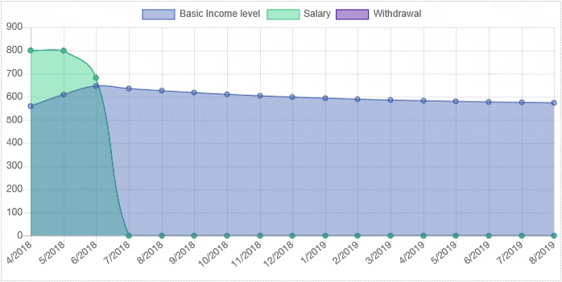

Dynamic Basic Income
A better solution for social security
Flexible solution for dynamic worklife
Traditional social security models were often created when most people had long term employment and needed safety coverage between jobs. Typically this meant that you had to be employed for some time before qualifying and it can take a while before you can collect benefits. This does not work well in current micro work environment where the employment length might be only for few days or the hours worked varies from day week to week. This easily leads to situations where accepting work is a net decrease in income as you might lose several weeks of benefits to work for a few days. We need better solutions where all work is beneficial.
Dynamic basic income has qualifications or limits but level of benefits increase towards the salary when you work and pay taxes and decrease towards the base benefits when you collect it. When your work revenues increase, the amount of benefit that can be collected decreases until your salary can maintain you. It's also possible to collect partial benefits to reduce the decrease and saveit for later.
Try It Yourself!
Test how would dynamic basic income work in you life situation by adjusting the amount you earn salary and collect benefits.
All Work Helps
Central problem is that traditional benefit systems can make it beneficial to not work. In dynamic basic income every earned dollar will increase both your net income and available benfits. You can work a day or a week and there is no additional bureacracy or penalties, making every dollar count.
Cost Neutral
Dynamic basic income can be balanced to existing benefit levels by adjusting how high and fast benefits change, making it a cost neutral change. Compared to traditional models with fixed periods salary dependent benefits, the peak benefit can be made higher without increasing the costs.
Income Transfer Neutral
Fundamental problem of most basic income models is that they create new big income transfers from the rich to the poor, making it a political challenge to implement. They make everyone a beneficiary which means you need new taxes get it back from most people. Usually tradeoff point you don't gain or lose anything, but everyone with more income will lose money. That's not to say this is not possible, but it makes it harder to get them past.
Structural Unemployment
Most western countries suffer from structural, long term unemployment caused by existing professional skills becoming obsolete by disappearing industries. In a situation there is no work of your competence available, you might have to re-educate or relocate which hard especially for older people. Often the only options are to try to survive on social security or do minimal wage work for the rest of their lives. Rather trying to re-educate everyone, dynamic basic income would allow turning structural unemployment to 10%, 20%, 30% employment and increase chances of finding new employment.
Jatkokehityshaasteet
Dynamic Basic Income on tällä hetkellä konsepti joka tarvitsee tarkempaa analysointia, syntyykö uudenlaisia ongelmia tai käyttäjäryhmiä joille se ei sovi. Mallissa on paljon parametreja kuten kuinka nopeasti tuen taso nousee ja laskee, kuinka paljon ansiot vaikuttavat nostettavissa olevaan tukeen ja matalat ansiotasot käyttäytyvät joiden tarkempi määrittely vaatii eri skenaarioiden mallintamista. Lisäksi mallin käyttöönotto vaatisi että ansiosidonnainen ulotetaan kaikille esimerkiksi tekemästä kassajäsenyydestä pakollista tai tekemällä ansiosidonnaisesta perusvaihtoehto.